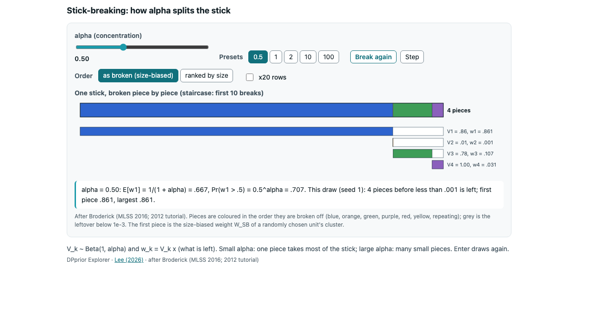
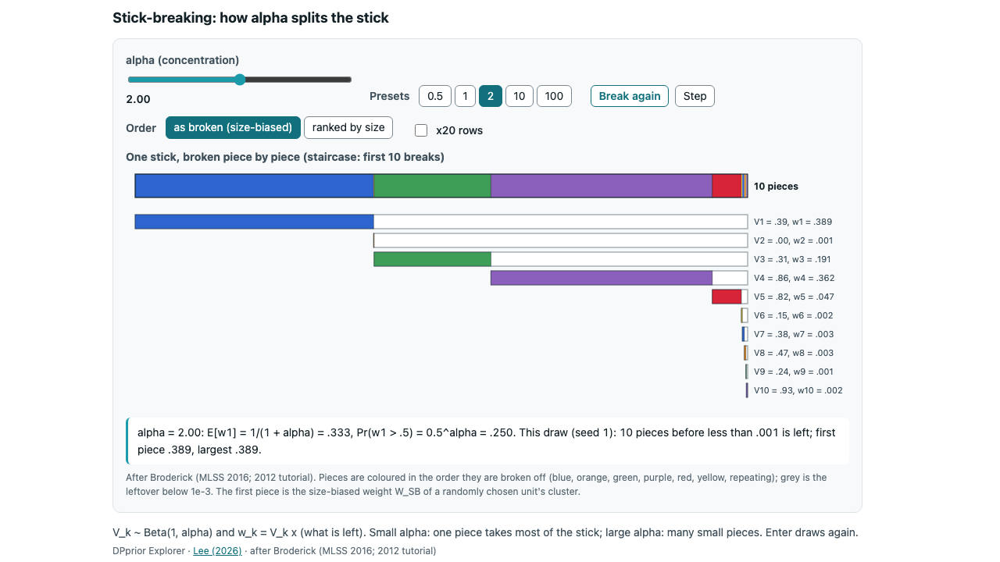
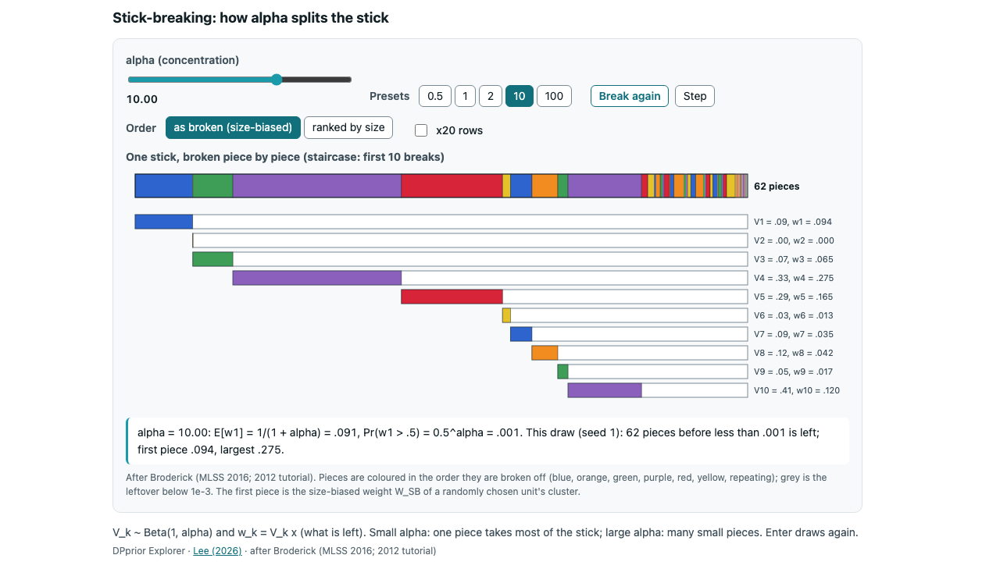
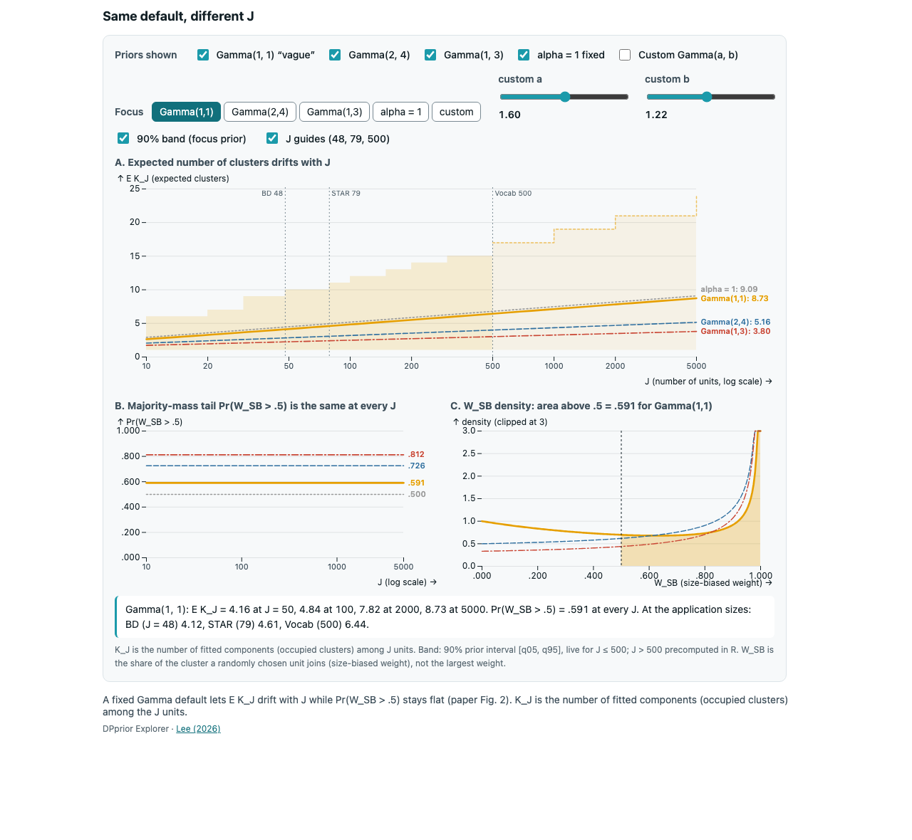
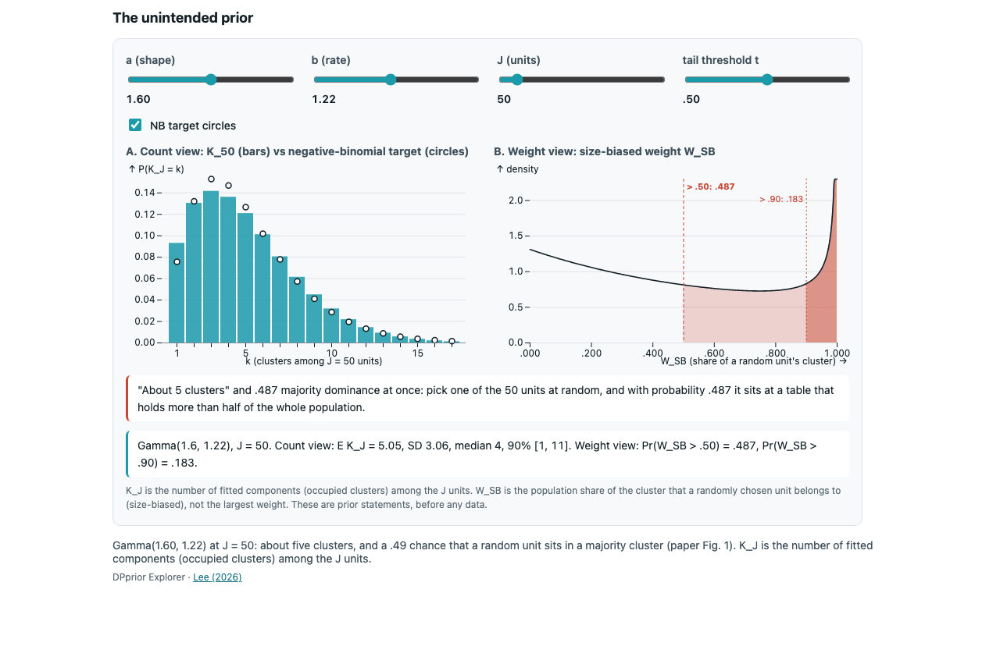
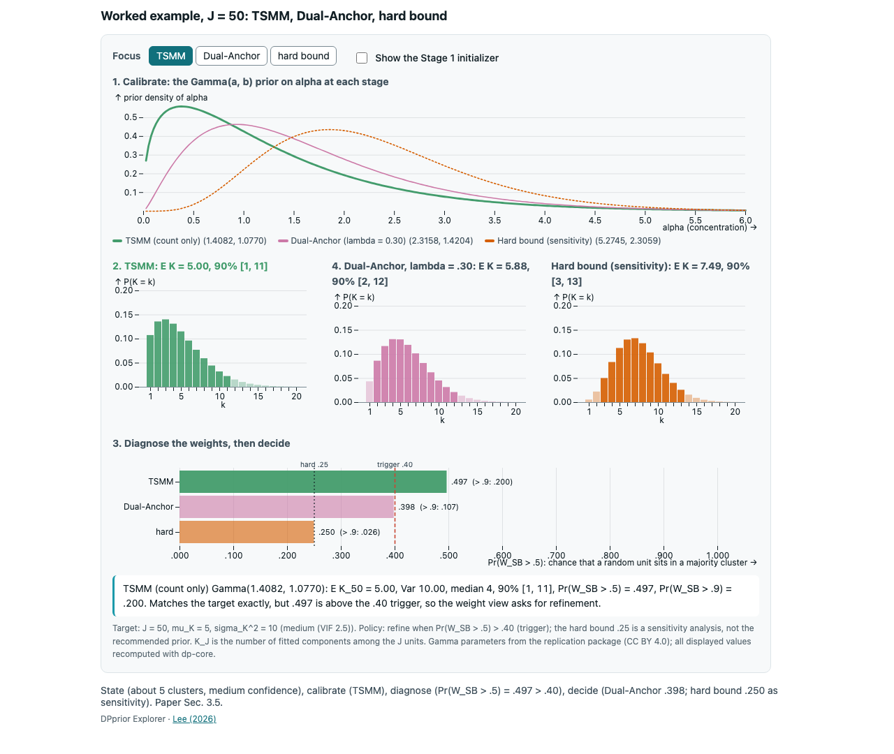
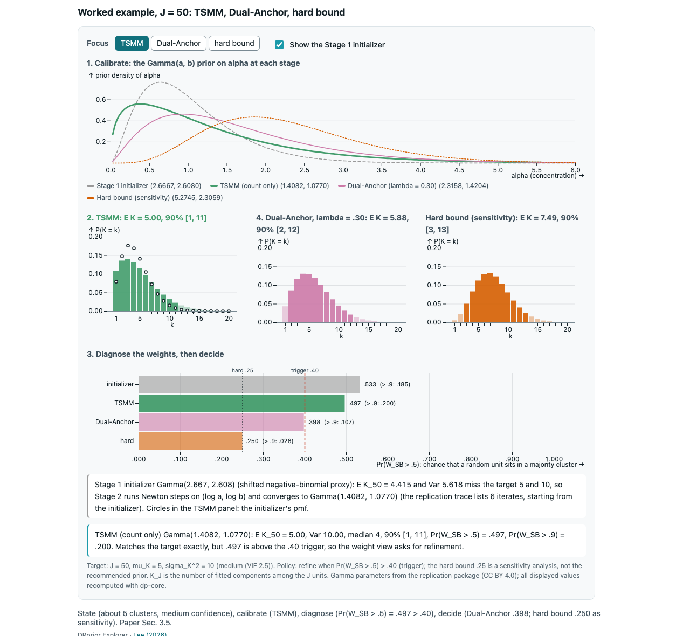
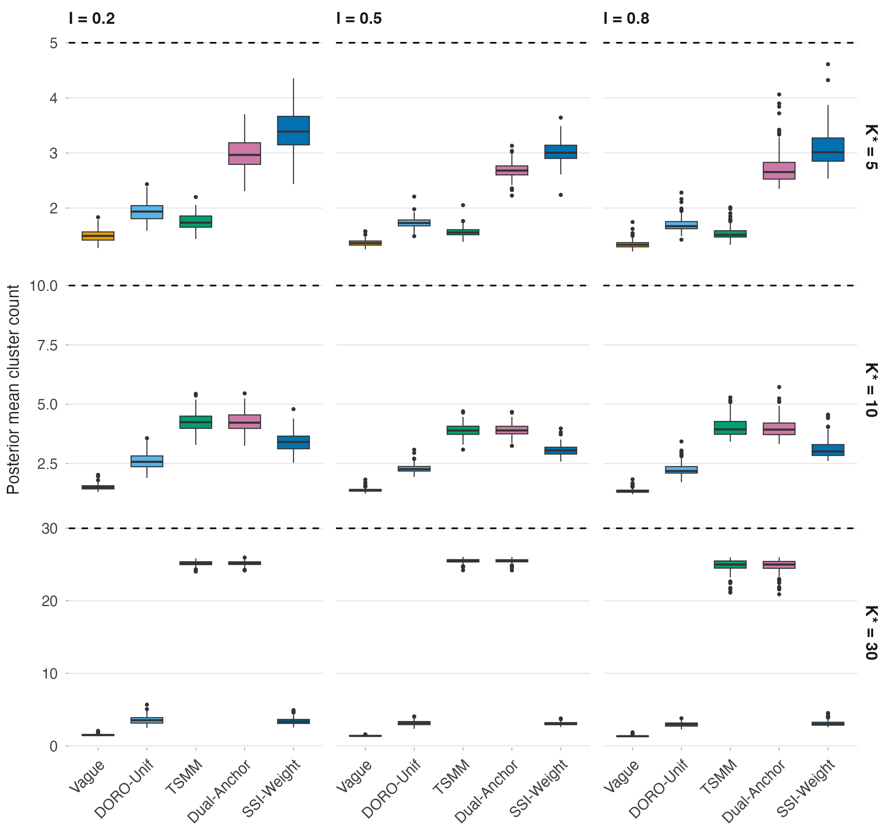
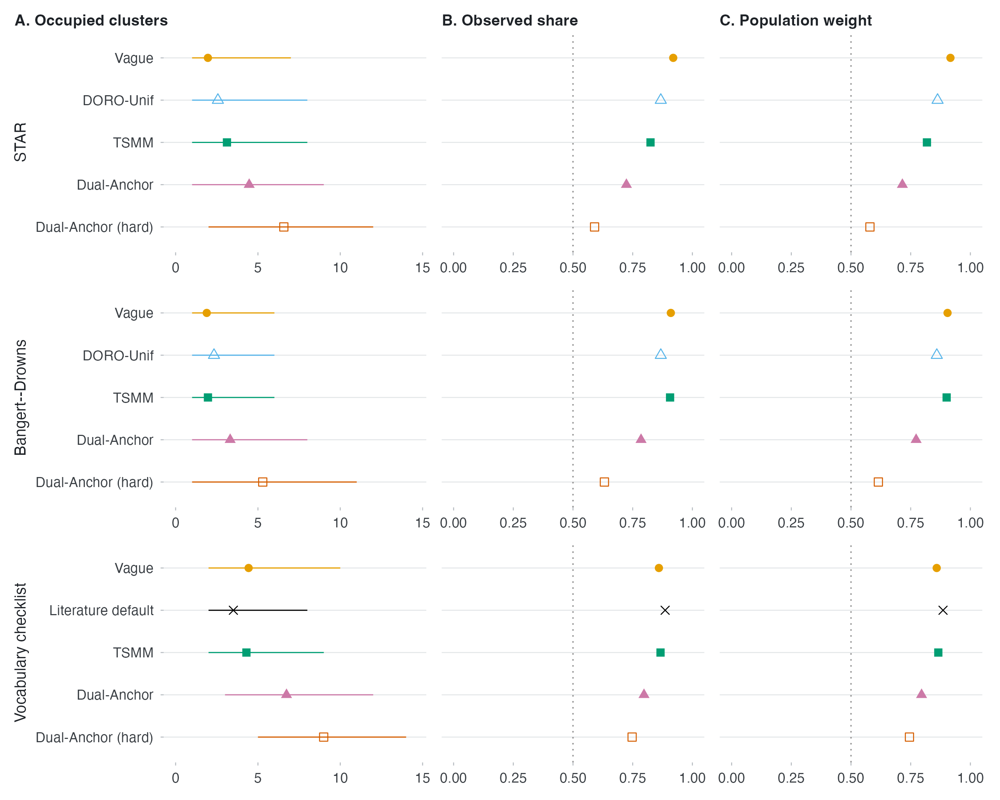

Static fallbacks for talks
Catalog A-14
If a widget cannot run (no JavaScript, a locked-down laptop, a projector machine with an old browser), these images carry the same message. Each was captured from the widget’s standalone page opened as a local file (file://) in headless Chrome.
Stick-breaking (P-05): alpha 0.5, 2, 10



Same default, different J (M-01, M-02)

The unintended prior (M-03)

Worked example, J = 50 (C-15)


From the paper


K_J is the number of fitted components (occupied clusters) among the J units. The widget images show prior quantities; Figures 4 and 7 show posterior summaries. Source of the paper figures: joonho112/DPprior-paper-replication, outputs/main/main-figure-4.png and main-figure-7.png (CC BY 4.0).
Embedding widgets in slides (A-15)
A proof-of-concept reveal.js deck tested five ways to put a widget on a slide, opening the files from file:// in Chrome:
| Path | Offline from a local folder |
|---|---|
Live widget: load js/vendor/d3.min.js, js/vendor/plot.min.js and js/bundles/<name>.js, then call DPX["<name>"].mountWidget(el, spec) |
works |
Local iframe of embed/<name>.html?... |
works |
Video (media/stick_alpha.mp4) |
works |
Inline Quarto {ojs} cell |
needs a local web server; Quarto disables OJS on file:// |
| GitHub Pages iframe | needs the network |
A network audit with Chrome’s net log found no remote requests from the deck except the Pages slide. The standalone pages accept a preset in the query string, for example embed/stick-breaking.html?alpha=0.5.